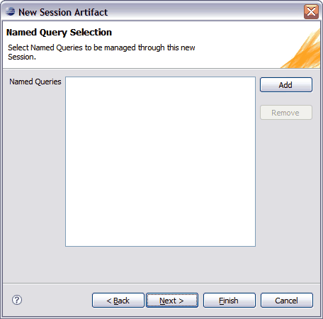

© copyright 2005, 2006, 2007 Cisco Systems, Inc. - All rights reserved
You specify the named queries to be exposed by your Session Facade in the Named Query Selection dialog of the New Session Artifact wizard. You use the Add or Remove buttons to select the Named Queries that you want to add to the specification of your Session Facade Artifact.


© copyright 2005, 2006, 2007 Cisco Systems, Inc. - All rights reserved